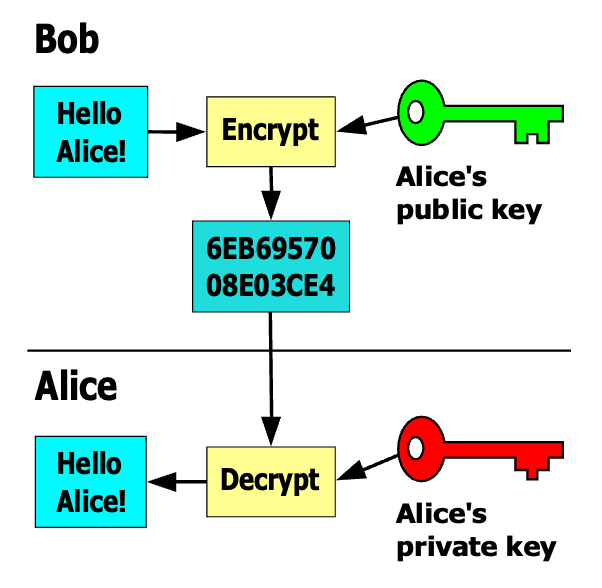

By Mark Drummond (Empire Life)
© 2024 IDPro, Mark Drummond
To comment on this article, please visit our GitHub repository and submit an issue .
Cryptography is the science and art of secret writing—keeping information secret. (Garfinkel 1996)
For almost as long as we have been writing, we have tried to write in secret. The use of ciphers to make writing unintelligible to all but an intended recipient is at least as old as ancient Mesopotamia.
In the year 1567, Mary, Queen of Scots , was executed for her involvement in a plot to assassinate the then Queen of England, Elizabeth I. A cabal of conspirators planned to overthrow Elizabeth to install Mary on the Throne of England. Mary’s hand in the affair was proven using letters between Mary and the cabal. These letters were written in cipher, rendered unintelligible to the casual observer.
Queen Elizabeth’s spymaster, Sir Francis Walsingham, had been intercepting and making copies of Mary’s letters. He enlisted the help of Thomas Phelippes , a linguist and expert in ciphers, to decipher Mary’s letters. Phelippes was successful, and the content of the letters was revealed, making clear Mary’s involvement, thus giving Elizabeth the evidence she needed to have Mary put to death.
In the 21st century, secret communications are as important as ever, but there are additional protections we want to apply to our messages. The study of techniques for protecting communications is referred to as Cryptography.
Security practitioners use cryptographic systems to meet four fundamental goals: confidentiality, integrity, authentication, and non-repudiation. (Chapple 2021)
Cryptography has four main goals:
Confidentiality (privacy, secrecy): keeping data secret from all but those authorized to see the data.
Integrity: preventing and detecting the unauthorized—intentional or otherwise—modification of data.
Authentication: positively identifying the parties to a communication and the source of data.
Non-repudiation: methods preventing someone from denying an action they took or a decision they made.
I will follow the model of Singh’s The Code Book (Singh 2000) in using more approachable but arguably less accurate or consistent terminology and definitions. Terms such as encrypt and encipher are treated as synonyms. Readers should bear in mind that the technical literature on cryptography may use slightly different definitions.
| Term | Synonyms | Definition |
|---|---|---|
| Asymmetric Key Cryptography | Public Key Cryptography | A cryptosystem in which a pair of keys is used to encrypt and decrypt data. The pair of keys has the unusual property that data encrypted with one can be decrypted only with the other. |
| Cipher | Encryption Algorithm | A method for transforming plaintext into ciphertext. |
| Ciphertext | — | Data that has been encrypted. |
| Cryptanalysis | — | The study of deciphering secret writing. Code breaking. |
| Cryptography | — | The study of secret writing. Code making. |
| Cryptology | — | The field of research encompassing both cryptography and cryptanalysis. |
| Cryptosystem | — | The collection of technologies providing cryptographic functions such as encrypting and decrypting data. |
| Decrypt | Decipher | To transform ciphertext into plaintext, rendering the data intelligible. |
| Encrypt | Encipher | To transform plaintext into ciphertext, rendering the data unintelligible. |
| Key | Secret, secret key, encryption key | Unique input to a cryptosystem that adds randomness to the encryption process. The security of a cryptosystem is predicated on the secrecy of the key. |
| Session Key | — | A temporary key used to encrypt data communications during a relatively short-lived session. At the end of the session, further communication requires the use of a new session key. |
| Plaintext | Cleartext | Data that has not been encrypted. |
| Symmetric Key Cryptography | Private Key Cryptography | A cryptosystem in which a single key is used to both encrypt and decrypt data. |
… the secrecy of messages must depend upon a changeable key added to a sound basic cipher—Gaines (Gaines 2014) 1
All modern cryptosystems rely on a “key”, analogous to a password 2 . The key adds randomness to the encryption process, such that knowing the cipher alone is insufficient to decrypt the message. You can use new or additional keys as needed: a new key for every person you need to communicate with or a new key if you suspect an existing key has been compromised. Using a key-based system means your cipher can be made public, allowing experts to analyze it for flaws. It also means anyone can benefit from using your cipher to protect their data.
Encryption is the process by which a message (called plaintext) is transformed into another message (called ciphertext) using a mathematical function and a special encryption password, called the key. (Garfinkel)
Symmetric key cryptography uses a single key to encrypt and decrypt messages:
Figure 1: Symmetric Key Cryptography
MarcT0K (icons by JGraph), CC BY-SA 4.0 , via Wikimedia Commons
Consider the following use case:
Alice 3 wants to send a secret message to Bob. She chooses a strong key and a proven symmetric cipher, encrypts her message, and sends the ciphertext to Bob.
Eve may intercept the message, but she must perform cryptanalysis to reveal its contents.
Symmetric cryptosystems are relatively simple and usually very fast for both encryption and decryption, but there is a significant challenge when using symmetric cryptography on a large scale: key distribution. Because Alice used a symmetric key algorithm to encrypt her message, she needs to also pass the key to Bob. She must not do this in a way that allows Eve to intercept the key, or all is lost. Alice and Bob could meet in person, but this becomes impractical if they are geographically remote from one another.
Alice could hire a trusted courier, but this is slow and doesn’t scale. If there are N people who must communicate securely, and you never share a single key with more than two people, the number of secret keys needed is:
Figure 2: For N = 1,000 people, you need to distribute, manage, and secure 499,500 keys
Despite the key distribution problem, we use symmetric ciphers extensively. They are computationally efficient and, in an order of magnitude, more efficient than the asymmetric ciphers we discuss below. You can encrypt large amounts of data in comparatively little time. The symmetric cipher’s advantage is speed.
Asymmetric Key Cryptosystems take a radically different approach to encryption and decryption, which greatly simplifies the problem of key distribution.
Imagine Alice and Bob have a lockbox with the following properties:
The box has two distinct keys, one in Alice’s possession, the other in Bob’s possession,
When the box is locked with one of the keys, it can be unlocked only with the other, and vice versa.
As long as Alice and Bob keep their keys secure, this box has some useful properties:
Authentication: If Alice receives the box and it is locked, she knows it was Bob who locked the box,
Non-repudiation: Bob cannot deny having locked the box since it must have been locked with his key.
In this way, Alice and Bob can securely and confidently exchange physical objects without having to share a single lockbox key. Because Alice and Bob have their own personal keys that are not shared, they can have many different boxes that use the same key, and the counterparties can securely exchange objects without needing to create additional keys to exchange with additional parties.
In 1976, Whitfield Diffie and Martin Helman released a paper, “New Directions in Cryptography” (Diffie 1976), based in part on previous work by Ralph Merkle . In the paper, Diffie and Helman describe techniques for securely exchanging secret keys and a technique for encrypting data using a pair of encryption keys. In 1977, Ron Rivest, Adi Shamir, and Leonard Adleman would go on to develop the first commercially viable asymmetric cryptosystem, RSA, based on the work of Diffie & Helman. 4
Asymmetric key cryptosystems are the foundation of cryptography on the Internet today. Every time you visit a secure HTTPS website, asymmetric key cryptography secures the connection.
The pair of keys in an asymmetric key cryptosystem are mathematically bound in a way that provides some very useful features. Analogous to the lockbox keys above, a message encrypted with one of the keys in the pair can only be decrypted with the other key. One of the keys is made public. The other is kept secret.
If Alice gives Bob her public key, Bob can use it to encrypt a message, and only the private key, kept secret by Alice, can decrypt the message. Likewise, if Bob has his own key pair and shares his public key with Alice, the two can now communicate securely without needing to pass a secret key back and forth. This solves the key distribution problem: For N people, you need only N key pairs.

Figure 3: Asymmetric Key Cryptography
(Davidgothberg, Public domain, via Wikimedia Commons)
Another useful operation made possible with asymmetric key cryptography is message signing. Alice can use her private key to apply a digital signature to a message, and that signature can be verified with her public key. If Alice signs a message and sends it to Bob, Bob can confirm that the message did, in fact, come from Alice. This confirmation, if successful, also tells Bob the message was not tampered with after it was signed. Consider the following workflow:
Alice writes a message to Bob and signs it with her private key.
Alice encrypts the message with Bob’s public key and sends the message to Bob.
Bob decrypts the message with his private key.
Bob verifies the signature with Alice’s public key.
As a result, Alice has communicated securely with Bob, and Bob knows he can trust the message.
If this all seems too good to be true, fear not, there’s a downside! Public key encryption and signing are computationally much more expensive than symmetric key encryption, so much so that you would not want to regularly encrypt large amounts of data with asymmetric key encryption.
Modern cryptosystems combine both asymmetric and symmetric key cryptography to leverage the benefits of each. Asymmetric key cryptography is used to securely share a secret key, which is then used for the duration of the current transaction or session.
Understanding cryptography is fundamental to understanding information security, and central to information security is digital identity. While it is not necessary for most identity practitioners to understand the mathematics behind specific cryptographic techniques, understanding how cryptography works in general and how we use it is essential.
The author thanks:
Robert Sherwood and Matt Topper for their constructive feedback and contributions, and
IDPro Principal Editor Heather Flanagan for all her assistance with the publishing process.
There are many excellent resources for learning about cryptography and cryptanalysis. Some recommendations follow. See also the bibliography below.
For an introduction to the history of cryptography, read Simon Singh’s “The Code Book” (Singh 2000).
For a more comprehensive history of cryptography, read David Kahn’s “The Codebreakers” (Kahn 1996).
For a comprehensive technical dive into cryptography, consider Bruce Schneier’s “Applied Cryptography” (Schneier 2015).
For an introduction to practical cryptanalysis, read Helen F. Gaines’ “Cryptanalysis: A Study of Ciphers and Their Solution” (Gaines 2014).
If you have a penchant for coding, you’ll find extensive resources at Professor Bill Buchanan’s https://asecuritysite.com/ (Buchanan).
Mark Drummond
Mark Drummond is Director of Digital Trust and Identity at The Empire Life Insurance Company in Kingston, Ontario, Canada.
Buchanan, Bill. “Asecuritysite.Com.” Security and So Many Things. Accessed January 31, 2024. https://asecuritysite.com/.
Chapple, Mike, James Michael Stewart, and Darril Gibson. (ISC)2 CISSP Certified Information Systems Security Professional Official Study Guide. Ninth edition . Hoboken, NJ: John Wiley & Sons, Inc., 2021.
Diffie, W., and M. Hellman. “New Directions in Cryptography.” IEEE Transactions on Information Theory 22, no. 6 (1976): 644–654.
Gaines, Helen F. Cryptanalysis: A Study of Ciphers and Their Solution . Courier Corporation, 2014.
Garfinkel, Simson, and Gene Spafford. Practical UNIX and Internet security . O’Reilly Media, Inc., 1996.
Harris, Shon, and Fernando Maymí. CISSP All-in-One Exam Guide. Eighth edition . New York: McGraw-Hill, 2018.
Kahn, David. The Codebreakers: The Comprehensive History of Secret Communication from Ancient Times to the Internet . Simon and Schuster, 1996.
Kerckhoffs, Auguste. “La Cryptographie Militaire.” Journal des Sciences militaires , 9th series, IX (January 1883), 5-38 ; (February 1883), 161-191.
Menezes, Alfred J., Paul C. Van Oorschot, and Scott A. Vanstone. Handbook of Applied Cryptography . CRC Press, 2018.
Schneier, Bruce. Applied Cryptography : Protocols, Algorithms, and Source Code in C . 20th anniversary edition. Indianapolis, Indiana: Wiley, 2015.
Singh, Simon. The Code Book: The Science of Secrecy from Ancient Egypt to Quantum Cryptography . Anchor, 2000.
A restatement of Kerckhoffs’ Principle, one of several principles for cryptographic systems in his “La Cryptographie Militaire” (Kerckhoffs 1883), which we can summarize as “even if Eve has your ciphertext and knows your cipher, the ciphertext should remain secure as long as the key has been kept secret”. ↩
Please note, this is not actually a password. It is not being used to authenticate someone. ↩
It is traditional to use the characters Alice, Bob, Eve, and others when describing cryptographic systems. Alice and Bob want to communicate in secret. Eve wants to eavesdrop on Alice and Bob’s conversation. ↩
In fact, Diffie, Helman, Merkle, Rivest, Shamir, and Adleman were scooped by James Ellis, Clifford Cocks, and Malcolm Williamson, all of GCHQ. Ellis proposed what was essentially public-key cryptography in 1970; based on Ellis’ work, Cocks independently developed RSA in 1973 and Williamson invented Diffie-Helman key exchange in 1974. Their work was kept secret until 1997. ↩